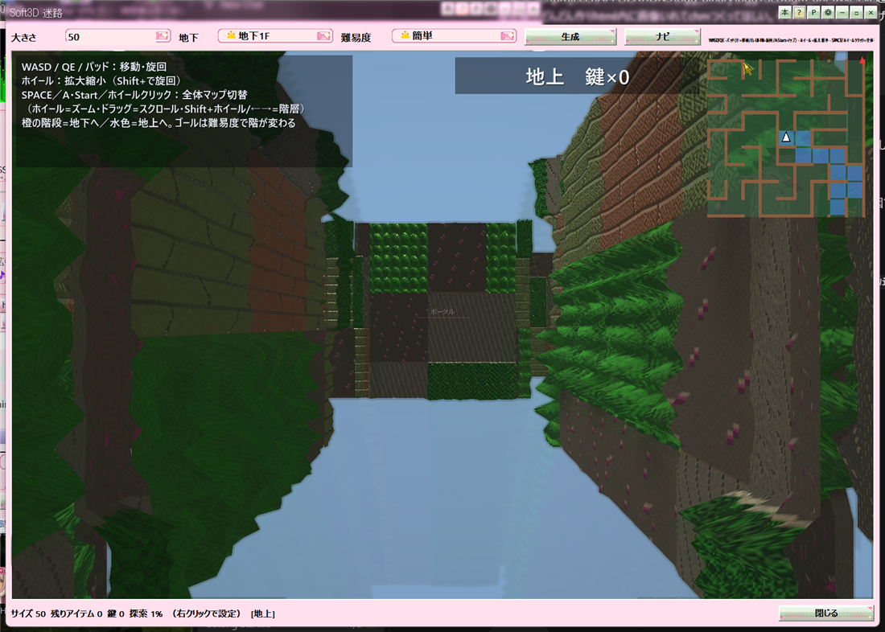

メディアプレイヤー下段の「迷路」ボタンから開ける、DirectX 11 の一人称迷路です。BGMを聴きながらの息抜き用で、本編の再生機能とは別枠のおまけです。進んだところは自動で保存されるので、開き直すと続きから遊べます。

Soft3D 迷路
| 操作 | 働き |
|---|---|
| WASD / 矢印 | 移動 |
| Q / E（または ←→） | 旋回 |
| SPACE / ホイールクリック | 全体マップの切り替え |
| 右クリック | サイズの再生成、ミニマップ、アイテムの種類など |
| ? ヘルプ | Soft3D と説明の凡例表 |
「地下」のコンボで、地下0〜3階までを作れます。
超簡単から超難しいまで選べます。難しいほど通路が細く、階段が多くなって上下の往復が増え、トラップも増えやすくなります。
浮いている球に触ると、再生中の曲に効果がかかります。テンポの上下、ピッチの上下、前後の曲、音量、EQと平坦、リバーブ、クロスフェード、ランダムの切り替えなどです。全部の階に置かれています。詳しくは おまけのお遊び をご覧ください。
壁にある窓は通り抜けられない飾りです。
足音、アイテム、鍵、扉、階段、ポータルに加え、壁への衝突、鍵のない扉、棘・粘液・氷・闇のトラップ、ゴール到達もその場でPCM合成します。再生中の曲とは別の経路なので、BGMはそのままです。右クリックの「表示・視点」から切ることもできます。
テンポやピッチをいじりすぎて元に戻したくなったら、右クリックの「テンポ／ピッチを開いた時に戻す」を使ってください。迷路を開いた時点の値に戻ります。
おまけ：Soft3D空中レース と同時には開けません。「DirectX 11 の初期化に失敗しました」と出る場合は、グラフィックドライバを更新してみてください。